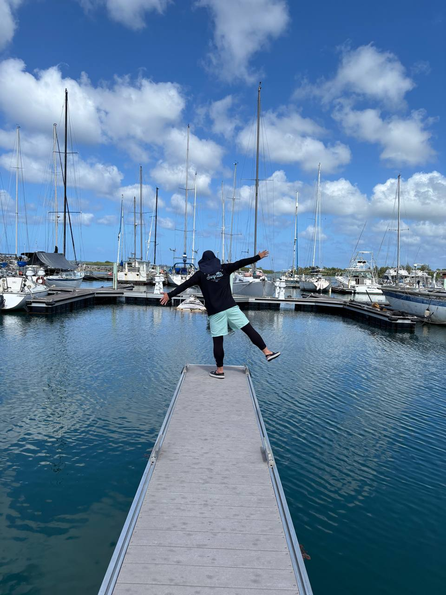

어제 만든 아이패드 파일서버, 오늘 실제로 좀 써봤다. 근데 FTP가 너무 느려서 답답했다. 썸네일 하나 뜨는 데도 한참 걸리고, 50메가짜리 동영상은 로딩 시간이 어마어마했다.
원인을 두 갈래로 좁혔다
느린 이유를 찾아보니 두 가지가 겹쳐있을 가능성이 컸다.
첫 번째는 Tailscale 연결 방식. Tailscale은 원래 두 기기가 직접(P2P) 붙는 게 정상인데, 네트워크 환경(방화벽, NAT 종류)에 따라 직접 연결이 안 되면 중계 서버(DERP)를 거쳐서 우회한다. 이러면 속도가 뚝 떨어진다 — 특히 한쪽이 셀룰러망이면 흔한 일이라고 한다. 아이폰 Tailscale 앱에서 아이패드를 눌러보면 "Direct"인지 "Relay"인지 바로 확인할 수 있다.
두 번째는 FTP 프로토콜 자체의 한계. FTP는 "부분 요청(Range Request)"을 잘 못한다. 그래서 썸네일 하나 뜨는데도 파일 전체(또는 앞부분 상당량)를 통째로 받아와야 하고, 영상도 스트리밍이 아니라 사실상 다운로드에 가까운 방식이라 느릴 수밖에 없는 구조였다. WebDAV/HTTP였으면 필요한 부분만 스트리밍해서 훨씬 빨랐을 거라고 한다.
WebDAV로 다시 붙여보기
일단 Owlfiles에서 WebDAV를 다시 시도해보기로 했다. 진짜 WebDAV를 지원하는지 확인하려고, 아이폰 사파리에서 아이패드 주소를 직접 쳐봤다. 파일 목록이 그냥 브라우저 화면에 뜨면 순수 HTTP 서버라는 뜻이라 WebDAV가 아니라는 걸 의미한다. 결과는 예상대로 — 501 에러. 진짜 WebDAV 프로토콜(PROPFIND 등)을 지원하지 않는 거였다.
앱을 갈아탔다
이쯤에서 다른 앱으로 넘어가기로 했다. Documents by Readdle, nPlayer 같은 앱들이 iOS에서 WebDAV 서버 기능으로 유명하다는 걸 알게 됐고, 여러 앱을 비교하다가 최종적으로 PocketServer라는 앱으로 정착했다. 이 앱은 진짜 WebDAV 프로토콜을 구현했고, 아이디·비밀번호 인증까지 지원했다.
PocketServer에서 계정을 만들고, 맥북 Finder에서 그 아이디·비밀번호로 접속했더니 — 성공. 아이패드 공유 폴더가 Finder에 그대로 떴다.
[아이폰] ─┐
[맥북] ─┼─(Tailscale 터널)─→ [아이패드: PocketServer WebDAV 서버]
[아이패드] ─┘ (인증 + 진짜 WebDAV)
어디서든 접속되고, 진짜 WebDAV라 스트리밍도 빠르고, 아이디·비밀번호 인증까지 걸려있고, 맥북 Finder랑 아이폰 양쪽 다 연동 확인까지 끝났다. 기념 삼아 예전 여행 사진 한 장을 이 파이프라인으로 올려봤다.

정리된 체크리스트
- 평소엔 서버 꺼두고, 필요할 때만 켜기 (배터리/보안)
- 아이패드 자동 잠금 "안 함"도 파일 옮길 때만 잠깐
- 와이파이 비밀번호 주기적으로 확인
- 셀룰러 환경에서도 한 번 더 테스트해서 Tailscale Direct/Relay 최종 확인
여러 앱을 비교해보면서(PocketServer, Owlfiles, Documents, FTP vs WebDAV, Tailscale Direct vs Relay) 하나씩 원인을 좁혀가는 과정이었다. 덕분에 나중에 문제가 생겨도 어디부터 봐야 할지는 이제 안다.